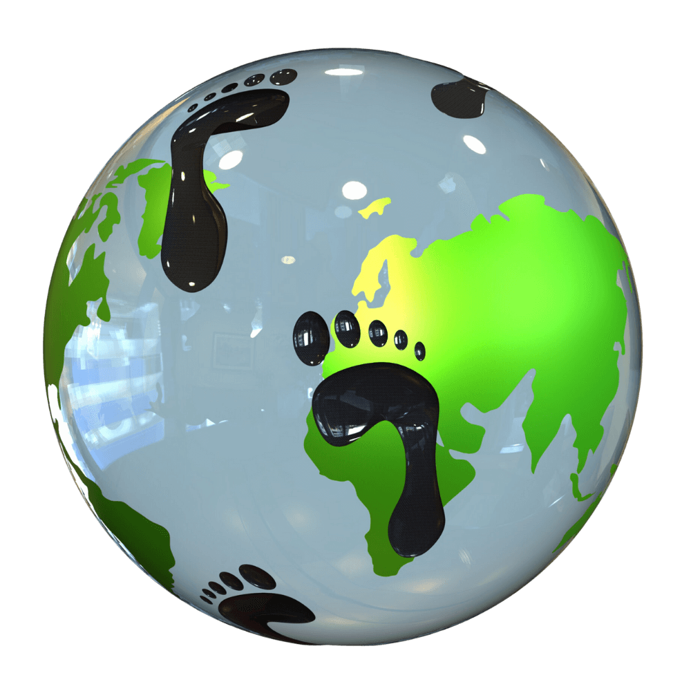
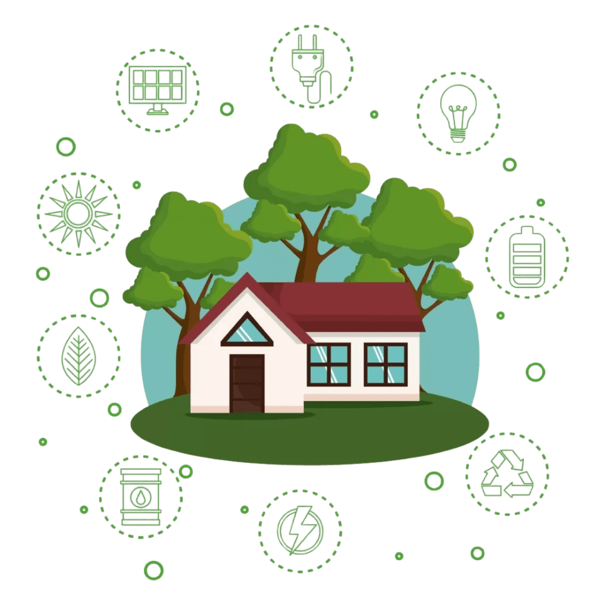

Pequeñas acciones, gran impacto 🌎
Cada decisión diaria deja una huella. Calcula la tuya y descubre cómo reducirla.
Calcular mi huella

Antes de empezar, cuéntanos sobre ti
Nombre:
Edad:
Género:
Selecciona...
Hombre
Mujer
Continuar
Tu resultado
...
Calcular otra vez